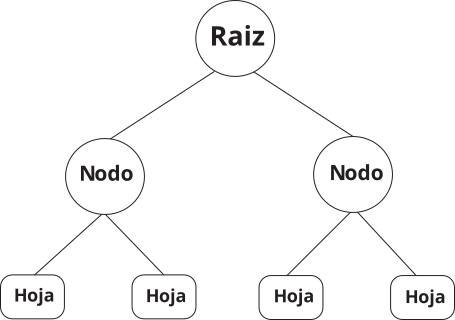
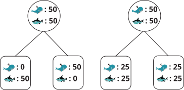
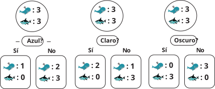
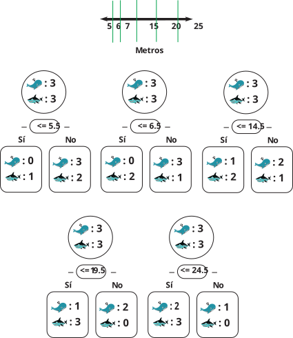
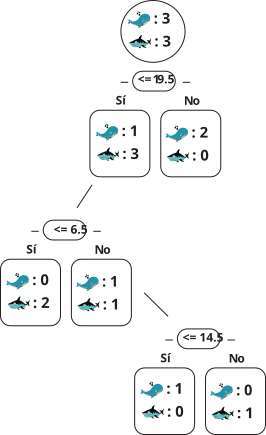

4. Árboles de decisión
Agenda
- ¿Qué es un árbol de decisión?
- ¿Cómo se construye un árbol de decisión?
- ¿Cómo se evalúa un árbol de decisión?
- ¿Cómo se elige un árbol de decisión?
Árboles de decisión
Los árboles de decisión son estructuras parecidas a los diagramas de flujo que utilizan nodos y ramas. Los caminos en el árbol separan los datos de tal manera que se pueda llegar a una separación precisa de un conjunto de datos.
Los árboles de decisión son útiles porque proporcionan una forma fácil de visualizar y entender cómo se toman las decisiones en un modelo.
Nodos: grupo de observaciones que comparten una característica.
Ramas: separación de los nodos.
Hojas: resultado final de la separación.
Árboles de decisión

¿Qué es un buen árbol de decisión?
Efectivamente separa las observaciones en grupos homogéneos.

¿Cómo se construye un árbol de decisión?
| Color | Tamaño (m) | Animal |
|---|---|---|
| Gris oscuro | 5 | Tiburón |
| Gris oscuro | 6 | Tiburón |
| Gris claro | 7 | Ballena |
| Gris oscuro | 15 | Tiburón |
| Azul | 20 | Ballena |
| Gris claro | 25 | Ballena |
¿Cómo se construye un árbol de decisión?
Hay que identificar la variable que mejor separa las ballenas de los tiburones. Comencemos con el color.

¿Cómo se construye un árbol de decisión?
Si la variable es continua, se pueden tratar todos los valores posibles como puntos de corte.

¿Cómo se construye un árbol de decisión?
Ahora, que tenemos todas las posibles separaciones, ¿cómo elegimos la mejor?
Necessitamos una métrica para evaluar la calidad de la separación.
- Entropía
- Ganancia de información
- Pureza de Gini
- log loss
Pureza de Gini es una medida para evaluar qué tan mezclados están los datos (pureza). Toma valores desde 0 (perfectamente separados) a 0.5 (completamente revueltos).
https://mlu-explain.github.io/decision-tree/

¿Cómo se construye un árbol de decisión?
Crear la base de datos.
Especificar el modelo.
¿Cómo se construye un árbol de decisión?
Estimar el modelo.
Visualizar los resultados.
¿Cómo se construye un árbol de decisión?
Arbusto
Crear un árbol de decisión con algunos predictores.
Seleccionar los predictores.
Especificar el modelo.
Estimar el modelo
Estimar el modelo
Visualizar el árbol.
Árboles de clasificación y regresión (CART)
Ahora, utilicemos todos los datos de la base de entrenamiento.
Calcular las métricas de desempeño del modelo.
Calcular las métrcias
Calcular las metricas que nos interesan.
Poner las métricas en un formato más fácil de comparar.
CART con hiperparámetros
¿Qué es un hiperparámetro?
Los hiperparámetros son valores para los modelos que se pueden ajustar y que permiten controlar el proceso de entrenamiento de un modelo.
El proceso de selección de los hiperparámetros se llama ajuste de hiperparámetros (tunning) y se puede hacer de forma manual o automática.
Por ahora, vamos a hacerlo de forma manual.
Estimar el modelo.
Calcular las métricas
Calcular las métricas que nos interesan.
Tabla de métricas
¡Pero todo esto pasa en los datos de entrenamiento!
¿Por qué es malo?
El objetivo es encontrar un modelo que no solo sea buena en los datos de entrenamiento, sino que también sea bueno en datos futuros. Si solo evaluamos el modelo en los datos de entrenamiento, no sabemos si el modelo es bueno en datos futuros.
datos_prueba_out <-
datos_prueba |>
select(PYALC)
lm_predicciones <- cbind(predict(lm_results, datos_prueba), datos_prueba_out)|> mutate(model="lm")
tree_predicciones <- cbind(predict(tree_results, datos_prueba), datos_prueba_out)|> mutate(model="Árbol")
tree_h_predicciones <- cbind(predict(tree_h_results, datos_prueba), datos_prueba_out) |> mutate(model="Árbol hiperparámetros")Desempeño de los modelos
Tabla con todos los modelos
¿Cómo vamos a elegir el mejor modelo si solo evaluamos el modelo en los datos de prueba?
Práctica
Estime un arbol de decisión para la variable de consumo de marihuna. Intente diferente valores para los hiperparámetros y compare el desempeño del modelo en los datos de entrenamiento.

Machine Learning